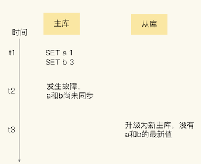
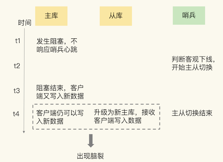
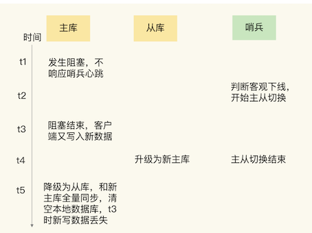

第二节 脑裂导致数据丢失
一个问题：我们的主从集群有 1 个主库、5 个从库和 3 个哨兵实例，在使用的过程中，发现客户端发送的一些数据丢失了，这直接影响到了业务层的数据可靠性。
所谓的脑裂，就是指在主从集群中，同时有两个主节点，它们都能接收写请求。
而脑裂最直接的影响，就是客户端不知道应该往哪个主节点写入数据，结果就是不同的客户端会往不同的主节点上写入数据。而且，严重的话，脑裂会进一步导致数据丢失。
1、为什么会发生脑裂？
1-1 确认是不是数据同步出现了问题
在主从集群中发生数据丢失，最常见的原因就是主库的数据还没有同步到从库，结果主库发生了故障，等从库升级为主库后，未同步的数据就丢失了。
新写入主库的数据 a:1、b:3，就因为在主库故障前未同步到从库而丢失了。

如果是这种情况的数据丢失，我们可以通过比对主从库上的复制进度差值来进行判断，也就是计算 master_repl_offset 和 slave_repl_offset 的差值。
如果从库上的 slave_repl_offset 小于原主库的 master_repl_offset，那么，我们就可以认定数据丢失是由数据同步未完成导致的。
部署主从集群时，也监测了主库上的 master_repl_offset，以及从库上的 slave_repl_offset。
但是，发现数据丢失后，我们检查了新主库升级前的 slave_repl_offset，以及原主库的 master_repl_offset，它们是一致的，也就是说，这个升级为新主库的从库，在升级时已经和原主库的数据保持一致了。那么，为什么还会出现客户端发送的数据丢失呢？
1-2 排查客户端的操作日志，发现脑裂现象
在排查客户端的操作日志时，在主从切换后的一段时间内，有一个客户端仍然在和原主库通信，并没有和升级的新主库进行交互。
这就相当于主从集群中同时有了两个主库。根据这个迹象，在分布式主从集群发生故障时会出现的一个问题：脑裂。
但是，不同客户端给两个主库发送数据写操作，只会导致新数据会分布在不同的主库上，并不会造成数据丢失。
1-3 发现是原主库假故障导致的脑裂
采用哨兵机制进行主从切换的，当主从切换发生时，一定是有超过预设数量（quorum 配置项）的哨兵实例和主库的心跳都超时了，才会把主库判断为客观下线，然后，哨兵开始执行切换操作。哨兵切换完成后，客户端会和新主库进行通信，发送请求操作。
但是，在切换过程中，既然客户端仍然和原主库通信，这就表明，原主库并没有真的发生故障（例如主库进程挂掉）。
主库是由于某些原因无法处理请求，也没有响应哨兵的心跳，才被哨兵错误地判断为客观下线的。结果，在被判断下线之后，原主库又重新开始处理请求了，而此时，哨兵还没有完成主从切换，客户端仍然可以和原主库通信，客户端发送的写操作就会在原主库上写入数据了。
“假故障”，查看原主库所在服务器的资源使用监控记录
原主库所在的机器有一段时间的 CPU 利用率突然特别高，这是我们在机器上部署的一个数据采集程序导致的。因为这个程序基本把机器的 CPU 都用满了，导致 Redis 主库无法响应心跳了，在这个期间内，哨兵就把主库判断为客观下线，开始主从切换了。不过，这个数据采集程序很快恢复正常，CPU 的使用率也降下来了。此时，原主库又开始正常服务请求了。
正因为原主库并没有真的发生故障，我们在客户端操作日志中就看到了和原主库的通信记录。等到从库被升级为新主库后，主从集群里就有两个主库了，到这里，我们就把脑裂发生的原因摸清楚了。

2、为什么脑裂会导致数据丢失？
主从切换后，从库一旦升级为新主库，哨兵就会让原主库执行 slave of 命令，和新主库重新进行全量同步。而在全量同步执行的最后阶段，原主库需要清空本地的数据，加载新主库发送的 RDB 文件，这样一来，原主库在主从切换期间保存的新写数据就丢失了。

在主从切换的过程中，如果原主库只是“假故障”，它会触发哨兵启动主从切换，一旦等它从假故障中恢复后，又开始处理请求，这样一来，就会和新主库同时存在，形成脑裂。等到哨兵让原主库和新主库做全量同步后，原主库在切换期间保存的数据就丢失了。
3、如何应对脑裂问题？
主从集群机制的配置项中查找是否有限制主库接收请求的设置。
通过查找，Redis 已经提供了两个配置项来限制主库的请求处理，分别是 min-slaves-to-write 和 min-slaves-max-lag。
min-slaves-to-write：这个配置项设置了主库能进行数据同步的最少从库数量；min-slaves-max-lag：这个配置项设置了主从库间进行数据复制时，从库给主库发送 ACK 消息的最大延迟（以秒为单位）。
可以把 min-slaves-to-write 和 min-slaves-max-lag 这两个配置项搭配起来使用，分别给它们设置一定的阈值，假设为 N 和T。
这两个配置项组合后的要求是，主库连接的从库中至少有 N 个从库，和主库进行数据复制时的 ACK 消息延迟不能超过 T 秒，否则，主库就不会再接收客户端的请求了。
即使原主库是假故障，它在假故障期间也无法响应哨兵心跳，也不能和从库进行同步，自然也就无法和从库进行 ACK 确认了。
这样一来，min-slaves-to-write 和 min-slaves-max-lag 的组合要求就无法得到满足，原主库就会被限制接收客户端请求，客户端也就不能在原主库中写入新数据了。
等到新主库上线时，就只有新主库能接收和处理客户端请求，此时，新写的数据会被直接写到新主库中。而原主库会被哨兵降为从库，即使它的数据被清空了，也不会有新数据丢失。
- 假设我们将
min-slaves-to-write设置为 1 - 把
min-slaves-max-lag设置为 12s - 把哨兵的
down-after-milliseconds设置为 10s
down-after-milliseconds是我们认定主从库断连的最大连接超时时间。如果在down-after-milliseconds毫秒内，主从节点都没有通过网络联系上，我们就可以认为主从节点断连了。如何选定新主库？
主库因为某些原因卡住了 15s，导致哨兵判断主库客观下线，开始进行主从切换。
同时，因为原主库卡住了 15s，没有一个从库能和原主库在 12s 内进行数据复制，原主库也无法接收客户端请求了。这样一来，主从切换完成后，也只有新主库能接收请求，不会发生脑裂，也就不会发生数据丢失的问题了。
4、本节小结
脑裂是指在主从集群中，同时有两个主库都能接收写请求。在 Redis 的主从切换过程中，如果发生了脑裂，客户端数据就会写入到原主库，如果原主库被降为从库，这些新写入的数据就丢失了。
脑裂发生的原因主要是原主库发生了假故障，总结下假故障的两个原因。
- 和主库部署在同一台服务器上的其他程序临时占用了大量资源（例如 CPU 资源），导致主库资源使用受限，短时间内无法响应心跳。其它程序不再使用资源时，主库又恢复正常。
- 主库自身遇到了阻塞的情况，例如，处理 bigkey 或是发生内存 swap，短时间内无法响应心跳，等主库阻塞解除后，又恢复正常的请求处理了。
为了应对脑裂，可以在主从集群部署时，通过合理地配置参数 min-slaves-to-write 和 min-slaves-max-lag，来预防脑裂的发生。
在实际应用中，可能会因为网络暂时拥塞导致从库暂时和主库的 ACK 消息超时。在这种情况下，并不是主库假故障，我们也不用禁止主库接收请求。
建议是，假设从库有 K 个，可以将 min-slaves-to-write 设置为K/2+1（如果 K 等于 1，就设为 1），将 min-slaves-max-lag 设置为十几秒（例如 10～20s），在这个配置下，如果有一半以上的从库和主库进行的 ACK 消息延迟超过十几秒，我们就禁止主库接收客户端写请求。
避免脑裂带来数据丢失的情况，而且，也不会因为只有少数几个从库因为网络阻塞连不上主库，就禁止主库接收请求，增加了系统的鲁棒性。